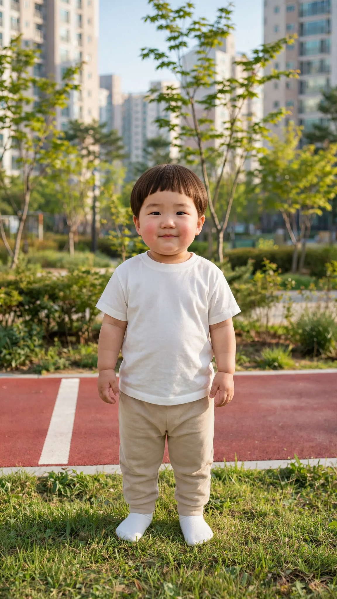

청바지 편 1번 — D·E
A·B·C 전부 거부 → 놀림·다급함은 원인 아님. 남은 차이는 «줄마다 쪼갠 시간표»(아기 입 묘사 «mouth closed» 3번 반복 포함)와 아빠 설명. D가 실제로 쓸 판(통과한 1판에 연기 지시만 얹음), E는 원인 확인용입니다. 둘 다 넣어 보시고 결과 알려 주세요.
시작 그림

1번-D
통과한 1판 그대로 + 연기 지시만: 대사 칸 한국어 괄호 2곳 구체화 · 아빠 목소리 설명 «감정을 실어 생생한 억양으로» 한 줄. 시간표는 1판 그대로(한 줄).
[Character Action & Continuity] Realistic Korean slice-of-life short video clip. A quiet park in a Korean apartment complex, outdoors in open daylight. Maintain exact appearance from start frame: a 24-month-old Korean toddler boy wearing a soft white t-shirt, beige pants and white socks. Scale: a small 24-month-old toddler build with natural proportions. [0-9s] Doyoon looks at the camera and talks with his dad, who stands just off-screen behind the camera. They speak one after another right away, with only short natural pauses between lines. [9-10s] Doyoon looks at the camera, mouth closed. [Dialogue Script & Emotion] 아빠 (화면 밖, 신나서 자랑하듯, 끝을 올리며 들뜬 목소리로): "도윤아, 아빠 이거 입고 나갈까?" 도윤 (보통 속도로, 깜짝 놀라 다급하게): "아빠! 옷 망가져떠!" 아빠 (화면 밖, 웃음 띤 목소리로 «아니야~»를 길게 늘이며 다정하게 설명): "아니야~ 원래 이렇게 나온 옷이야." [Audio & Voice Specifications] Two voices only. Doyoon: Definite 18 to 24-month-old Korean INFANT TODDLER boy voice. Low-pitched, cute, raspy little boy toddler voice. Strictly NOT a school-age child, NOT female. Normal speaking speed. Dad (off-screen): a warm, cheerful Korean man in his thirties who speaks with lively, expressive intonation and clear emotion in every line. Sound Format: Voices outdoors in a wide open park, recorded close to them. Background Sound: Quiet open-air park ambience, soft and steady. [Technical Directives] 카메라: 카메라를 보는 도윤이 전신 풀샷. 카메라 고정. 화면: 도윤이와 공원만 보인다. 아빠는 화면에 나오지 않는다. 도윤이 대사에만 입모양 100% 완벽 립싱크.
1번-E
(원인 확인용) 거부된 C판에서 «Doyoon listens, mouth closed»의 «mouth closed» 2곳만 뺌 — 아기 입 묘사 반복이 원인인지 봅니다.
[Character Action & Continuity] Realistic Korean slice-of-life short video clip. A quiet park in a Korean apartment complex, outdoors in open daylight. Maintain exact appearance from start frame: a 24-month-old Korean toddler boy wearing a soft white t-shirt, beige pants and white socks. Scale: a small 24-month-old toddler build with natural proportions. [0-3s] Off-screen, Dad speaks — proud and excited, showing off his new jeans, bright rising voice. Doyoon listens. [3-5s] Doyoon says his line — surprised, pointing at the jeans. [5-9s] Off-screen, Dad speaks — amused, smiling while he talks, stretching '아니야~' slowly, then explaining gently. Doyoon listens. [9-10s] Doyoon looks at the camera, mouth closed. [Dialogue Script & Emotion] 아빠 (화면 밖, 신나서 자랑하듯, 끝을 올리며 들뜬 목소리로): "도윤아, 아빠 이거 입고 나갈까?" 도윤 (보통 속도로, 놀라서 크게): "아빠! 옷 망가져떠!" 아빠 (화면 밖, 웃음 띤 목소리로 «아니야~»를 길게 늘이며 다정하게 설명): "아니야~ 원래 이렇게 나온 옷이야." [Audio & Voice Specifications] Two voices only, a natural back-and-forth conversation with real acting. Doyoon: Definite 18 to 24-month-old Korean INFANT TODDLER boy voice. Low-pitched, cute, raspy little boy toddler voice. Strictly NOT a school-age child, NOT female. Normal speaking speed. Dad (off-screen): Doyoon's cheerful, warm Korean father in his early thirties. He ACTS every line with clear emotion and lively intonation, like a real dad chatting with his son at home — never flat, never reading, never like a narrator. Sound Format: Voices outdoors in a wide open park, recorded close to them. Background Sound: Quiet open-air park ambience, soft and steady. [Technical Directives] 카메라: 카메라를 보는 도윤이 전신 풀샷. 카메라 고정. 화면: 도윤이와 공원만 보인다. 아빠는 화면에 나오지 않는다. 도윤이 대사에만 입모양 100% 완벽 립싱크.